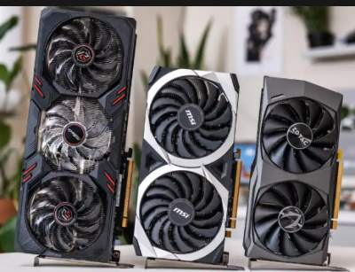
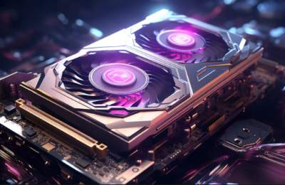
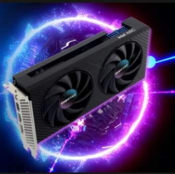

What ia a GPU?

What is a GPU?
Graphics processing technology has envolved to deliver unique benefits in the world of computing. the latest graphics processing units (GPUs) unlock possibilities in gaming, content creaion, machine learning, and more.
The GPU envolved as a complement to its close cousin, the CPU (central processing unit). while CPUs have continued to deliver performance increases through architectural innovations, faster clock speeds, and the addition of cores, GPUs are specifically designed to accelerate computer graphics wordloads. when shpping for a system, it can be helpfull to know the role of the CPU vs. GPU so you can make the most of both.

What Does a GPU DO?
The graghics processing unite, or GPU, has become one of the most important types of computing technology, both for personal computing. designed for parallel processing, the GPU is used in a wide range of applications, including grapgics and video rendering. although they are best known for their capabilities in gaming, GPUs are becoming more popular for use in creative production and artificial intelligence.
GPUs were orginally designed to accelerate the rendering 3D graphics. Over time, they became more flexible and programmable, enhancing their capabilities. This allowed graphics programmers to create more interesting visual effects and realistic scense with advanced lighting and shadowing technology. Other developers also began to tap the power of GPUs to dramatically accelerate additional workloads in high performance computing (HPC), deep learning, and more.

What Are GPUs Used For>
GPUs for Gaming: Video games have become more computitionally inensive, with hyperrealistic graphics and vast, complicated in-game worlds. With advaned display technologies, such as 4K screens and high refresh rates, along with the rise of virtual reality gaming, demands on graphics processing are capable of rendering graphics in both 2D and 3D. With better graphics performance, game can be played at higher resolution, at faster frame rates, or both.
GPUs for video Editing and Content Creation: For years, video editors, graphic designers, and other creative professional have struggled with long rendering times that tied up computing resources and stifled creative flow. Now the parallel processing offered by GPUs-along with bulit-in AI capabilities and advanced acceleration-making it faster and easier to render video and graphics in higher-definition formats.
GPU for Machine Learning: some of the most exciting applications for GPU technology involve AI and machine learning. Because GPUs incorporate an wxtraorinary amount of computational capability, they can deliver incredible acceleration in workloads that take advantage of the highly paralle nature of GPUs, such as image recognition. Many of today's deep learning technologies rely on GPUs working with CPUs.